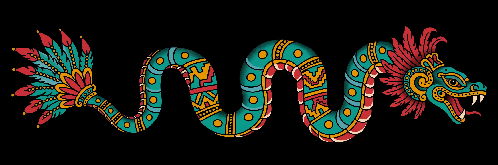
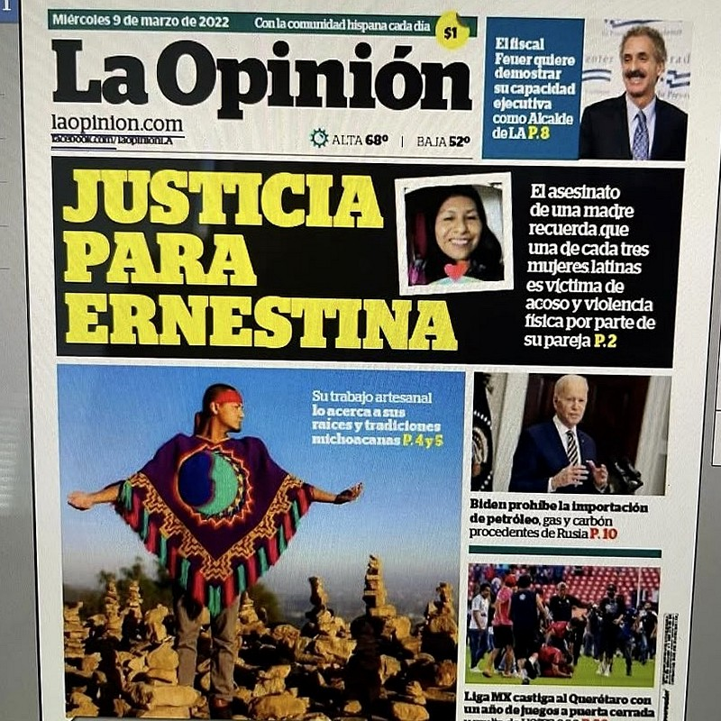

Paquiliztli
Tapestry Crochet Artist, Nahuatl Teacher, Pharmacist
Follow Me
Learn & Support
01
Udemy Course
Fundamentals of Tapestry Crochet for Colorful Art
02
Nahuatl Language Resources
Explore Nahuatl language resources
03
Patreon
Support my art and teaching
Press & Interviews

04
La Opinión
Front-page cover story — March 9, 2022 print edition (pp. 4–5). Tap to view the cover
05
Voyage LA interview
Read my conversation with VoyageLA
06
Remezcla
Interview — my crochet art and cultural roots
07
Furls Crochet
Pride Month Maker Stories interview
08
Tapestry Crochet
‘An Extraordinary Man’ — artist profile
09
El Comalito Collective
My March 2017 exhibit feature
Podcast Appearances
10
Two Spirit Warrior Podcast
‘Weaving Identity: The Art of Diego JV Paquiliztli’ on Spotify
11
Indigenous Podcast
‘Meeting Paquiliztli’ — live interview on YouTube
12
Fiberchats
Episode 115 — The Journey to the Roots Through Tapestry Crochet
13
Chicano Talk
Video interview on YouTube
14
Stories y Flores
Video interview on YouTube
15
Type Talks
Guest episode — 2 ESFPs with doctorates